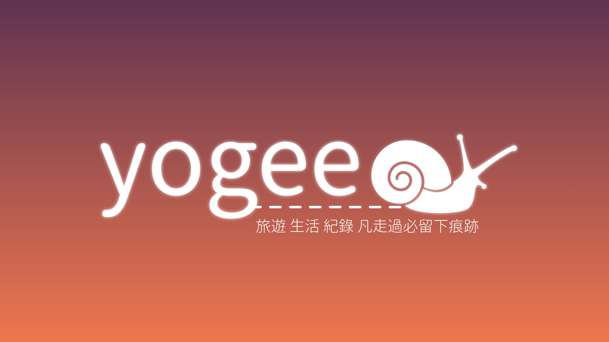
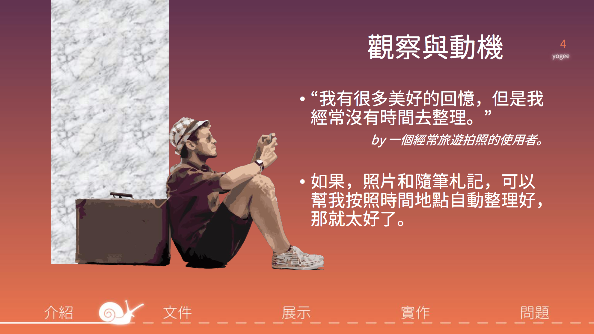

Lynda Lin (Lin Yung-Ta)
YOGEE
YOGEE
旅遊 生活 紀錄 凡走過必留下痕跡
詹孟穎、林敬、張美智、盧業達、楊惠強、呂翊瑄、林湧達
2015 Spring Software Design Pattern Final.
Responsibilty: UI & Interactive Design
軟體工程的期末專案，第二次在學時期有這麼多人合作的經驗，這次的App相較TrainSeat複雜度更高。 相較上學期的軟體工程，此門進階的課更專注在Design Pattern的使用。
[Slide]
Video Demo

Teaser

發現問題
現有的遊記軟體不符需求
yogee提供的服務

yogee時間軸主畫面
yogee的次要畫面